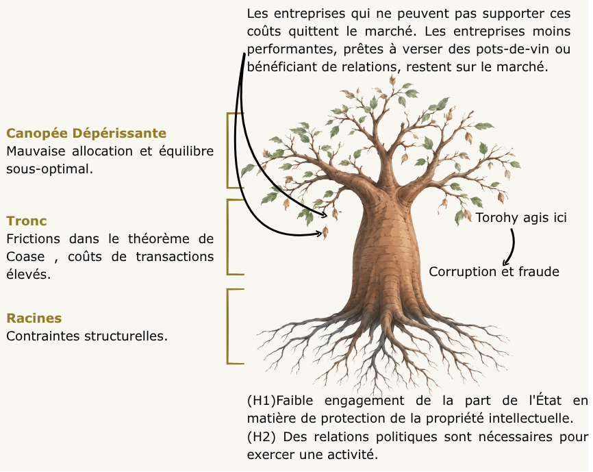

Torohy le Nouvel Outil de Lutte Contre la Corruption
Le gouvernement malgache a officiellement lancé « Torohy », une nouvelle initiative de signalement placée sous l’autorité du ministère de l’Économie et des Finances, et plus précisément de sa Direction générale des impôts. Cet outil permet aux citoyens et aux agents du secteur public de signaler des cas de corruption ou de fraude fiscale. Cette initiative vise à renforcer la transparence dans la gestion des recettes publiques et pourrait avoir un impact encore plus important que ce que prévoit le gouvernement si elle est correctement mise en œuvre, selon Midi Madagasikara (2026). La corruption est un facteur de réduction du surplus social, réduisant le bien-être collectif et érodant le bien commun. Cela témoigne d’un État faible, incapable de faire respecter ses lois de manière cohérente et qui protège certaines parties de manière sélective. Face à la mentalité de corruption omniprésente dans le pays, le gouvernement malgache s’est engagé à s’attaquer à ce problème en s’appuyant sur l’outil « Torohy ». Toutefois, les modalités précises de mise en œuvre de cet outil restent à préciser. La première conclusion à tirer de cette annonce est la volonté des responsables d’éradiquer ce qui freine le développement du pays.
Théorie Economique
Nous abordons la corruption sous l'angle des entreprises, en nous intéressant principalement à la manière dont elle fausse les décisions opérationnelles des entreprises plutôt qu'à ses effets sur les ménages ou les contribuables individuels. Deux hypothèses peuvent être formulées.
- Hypothèse 1 : Faible engagement de la part de l'État en matière de protection de la propriété intellectuelle
Les institutions publiques ne garantissent pas de manière fiable la protection des actifs et de la propriété intellectuelle des entreprises. Celles-ci sont donc exposées à la fraude et à la contrefaçon, et la corruption devient alors un moyen d'obtenir la protection que l'État ne parvient pas à assurer pour tous.
- Hypothèse 2 : Le fait d'entretenir des relations avec un haut fonctionnaire confère à une entreprise un avantage concurrentiel sur les marchés
Une relation avec un haut fonctionnaire confère à une entreprise un avantage concurrentiel par rapport à ses concurrents. Les relations politiques facilitent l’accès aux marchés publics et aux autorisations administratives. Les entreprises les considèrent donc comme un actif économique à part entière. Cependant, l’établissement d’une telle relation peut entraîner des coûts importants. Les entreprises qui ne bénéficient pas d’un tel soutien sont désavantagées même si leurs performances sont meilleures. Cela va dans le sens de la notion de protection étatique sélective : la capacité de protection limitée décrite dans l’hypothèse H1 est réservée aux entreprises qui disposent de ces relations.
La corruption augmente considérablement les coûts des entreprises et, lorsque ces coûts deviennent excessifs, certaines d’entre elles peuvent choisir de se retirer du marché. La « prime de protection » est versée par les entreprises disposées à payer pour bénéficier de la protection officielle de l’État pour assurer leurs actifs ou leurs activités. Dans ce contexte, certaines entreprises sont exposées à un risque de fraude considérable, notamment en raison de l’inégalité dans l’attribution des marchés publics. Les entreprises réagissent en élaborant une relation étroite avec un haut fonctionnaire comme intermédiaire auprès de l’administration publique. Le pays se trouve donc confronté à deux régimes coexistants. L’un dans lequel l’attribution des marchés repose sur les relations, permettant à des entreprises inefficaces de survivre, et l’autre dans lequel l’attribution dépend de la disposition à payer, permettant aux entreprises efficaces de prospérer mais les obligeant à supporter les coûts de la corruption.
Un pot-de-vin ne disparaît pas au sein de l’économie, car il constitue un transfert d’une partie à une autre. En revanche il engendre un coût pour le bien-être social commun, celui-ci provient des distorsions qui résultent de ce transfert illégal. Bien que ces "arrangements" soient préférables à l’absence totale de production, une perte sèche subsiste pour l’économie, les incitations à la corruption persistent, et les entreprises sont plus enclines à recourir elles-mêmes à des pratiques frauduleuses (pots-de-vin, évasion fiscale, ententes sur les appels d’offres) pour faire face à la situation. Des frictions apparaissent dans le processus de négociation coasien entre l’administration et une entreprise, la propriété intellectuelle n’est pas protégée, les droits de propriété ne sont pas bien définis, et les entreprises sont prêtes à verser des pots-de-vin à l’administration publique pour obtenir une protection et exercer leurs opérations. Comme les accords de corruption ne peuvent pas être sanctionnés de manière fiable par les tribunaux, Ils reposent sur une mise en œuvre de représailles effectuée par le secteur privé (dégradation de relations, et réputation, acte de menaces, et de représailles). Cela maintient les coûts de transaction à un niveau élevé. En conséquence, des entreprises qui ne sont pas nécessairement les plus efficaces en termes de gestion de technologie ou des coûts restent présentes sur le marché, conduisant l’économie vers un équilibre sous-optimal caractérisé par un faible progrès technique.
Les entreprises efficaces sur les coûts sont prêtes à payer pour bénéficier de la protection de l’État si ce paiement garantit une application efficace de la loi. Elles sont également disposées à supporter le coût liée à l'environnement de corruption afin d’éliminer les concurrents corrompus du marché. Si elles risquent d’être supplantées par les agissements corrompus d’un concurrent, les entreprises efficaces sont prêtes à payer jusqu’au niveau du coût de la procédure officielle d’application de la loi, ce qui atteint au maximum le montant du transfert illégal que les concurrents sont prêts à mettre.
En mettant en œuvre Torohy, le gouvernement malgache augmentera le coût de la corruption et de la fraude, à condition toutefois qu’une culture du signalement s’installe. Cet outil doit être complété par des campagnes de communication ciblant les fonctionnaires les plus exposés à la corruption. Le gouvernement doit également faire preuve d’une plus grande efficacité dans la protection des biens privés et dans la lutte contre la fraude. La pratique consistant à désigner un haut fonctionnaire comme intermédiaire devrait également cesser
Contraintes structurelles
L'économie malgache souffre d'une défaillance institutionnelle qui entraîne une mauvaise allocation des ressources entre les entreprises. La concurrence s'en trouve réduite, et les entreprises inefficaces restent sur le marché tandis que certaines entreprises efficaces le quittent. Cette situation est due à l'échec des contraintes du théorème de Coase, des frictions apparaissent dans le processus et le recours à des comportements illégaux s'impose alors comme solution.
Le problème ne peut être résolu si l’on ne s’attaque pas d’abord aux fondements de l’économie. Ces fondements constituent les contraintes structurelles de l’économie. La corruption est alimentée par ces fondements, à commencer par une protection insuffisante de la propriété intellectuelle et des actifs privés par l’État. Dans une économie où la propriété intellectuelle n’est pas correctement protégée par le gouvernement, les entreprises ne sont pas disposées à s’implanter. Les investisseurs étrangers sont moins enclins à s’engager dans une économie où la propriété intellectuelle est mal protégée. La littérature suggère que les investissements directs étrangers sont plus élevés là où la protection est plus forte (Mansfield, E., 1994). Une autre question qui se pose lors de l’exploitation ou du lancement d’une entreprise est la nomination d’une personnalité politique ou d’un responsable administratif entretenant des liens avec les autorités locales. Cela peut entraîner une augmentation des coûts pour l’entreprise, mais l’avantage tiré de ces relations peut constituer un facteur clé de l’avantage concurrentiel de l’entreprise par rapport à des entreprises qui ne disposent pas de tels liens. Cette dernière situation peut entraîner une captation importante par les élites.

Conclusion
Deux régimes coexistent : l’un où la répartition dépend des relations et où les entreprises inefficaces survivent, et l’autre où elle dépend de la disposition à payer, où les entreprises efficaces s’imposent mais supportent le coût de la corruption. La volonté d’éradiquer la culture de la corruption en mettant un outil à la disposition de la population est un premier pas vers un plus grand développement économique. Mais lorsque les racines sont pourries, en raison d’un État de droit fragile et de la nécessité persistante de nouer des relations politiques, les fruits du baobab ne peuvent pas prospérer. Sans un traitement des racines, la mise en œuvre de cet outil peut même conduire à une situation pire encore, où les élites, dans un État faible, exploiteront les avantages de petites dénonciations pour obtenir une réponse judiciaire disproportionnée. De nombreuses questions restent encore sans réponse, notamment : comment cet outil va-t-il être effectivement mis en œuvre ? Comment les sanctions seront-elles imposées ? Les fonctionnaires utiliseront-ils réellement cet outil ? La question centrale est de savoir si le gouvernement est disposé à s’attaquer aux problèmes sous-jacents et à s’attaquer aux racines du problème.
M.H